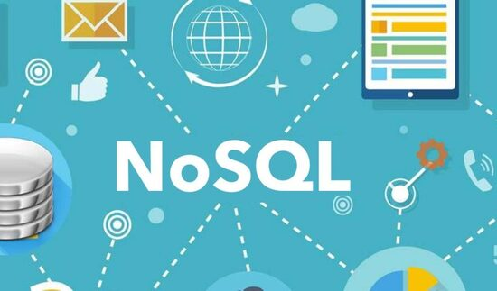

hablar de bases de datos NoSQL es hablar de estructuras que nos permiten almacenar información en aquellas situaciones en las que las bases de datos relacionales generan ciertos problemas debido principalmente a problemas de escalabilidad y rendimiento de las bases de datos relacionales donde se dan cita miles de usuarios concurrentes y con millones de consultas diarias. Además de lo comentado anteriormente, las bases de datos NoSQL son sistemas de almacenamiento de información que no cumplen con el esquema entidad–relación. Tampoco utilizan una estructura de datos en forma de tabla donde se van almacenando los datos sino que para el almacenamiento hacen uso de otros formatos como clave–valor, mapeo de columnas o grafos

VENTAJAS Y DESVENTAJAS:
VENTAJAS:
1. A diferencia de las bases de datos relacionales, las bases de datos NoSQL están basadas en key-value pairs.
2. Algunos tipos de almacén de bases de datos NoSQL incluyen diferentes tipos de almacenes como por ejemplo el almacén de columnas, de documentos, de key value store, de gráficos, de objetos, de XML y otros modos de almacén de datos.
3. Algunos tipos de almacén de bases de datos NoSQL incluyen almacenes de columnas, de documentos, de valores de claves, de gráficos, de objetos, de XML y otros modos de almacén de datos.
4. Las bases de datos NoSQL de código abierto tienen una implementación rentable. Ya que no requieren las tarifas de licencia y pueden ejecutarse en hardware de precio bajo.
5. Cuando trabajamos con bases de datos NoSQL, ya sean de código abierto o tengan un propietario, la expansión es más fácil y más barata que cuando se trabaja con bases de datos relacionales. Esto se debe a que se realiza un escalado horizontal y se distribuye la carga por todos los nodos. En lugar de realizarse una escala vertical, más típica en los sistemas de bases de datos relacionales.
DESVENTAJAS:
1. La mayoría de las bases de datos NoSQL no admiten funciones de fiabilidad, que son soportadas por sistemas de bases de datos relacionales. Estas características de fiabilidad pueden resumirse en: “atomicidad, consistencia, aislamiento y durabilidad.” Esto también significa que las bases de datos NoSQL, que no soportan esas características, ofrecen consistencia para el rendimiento y la escalabilidad.
2. Con el fin de apoyar las características de fiabilidad y coherencia, los desarrolladores deben implementar su propio código, lo que agrega más complejidad al sistema.
3. Esto podría limitar el número de aplicaciones en las que podemos confiar para realizar transacciones seguras y confiables, como por ejemplo los sistemas bancarios.